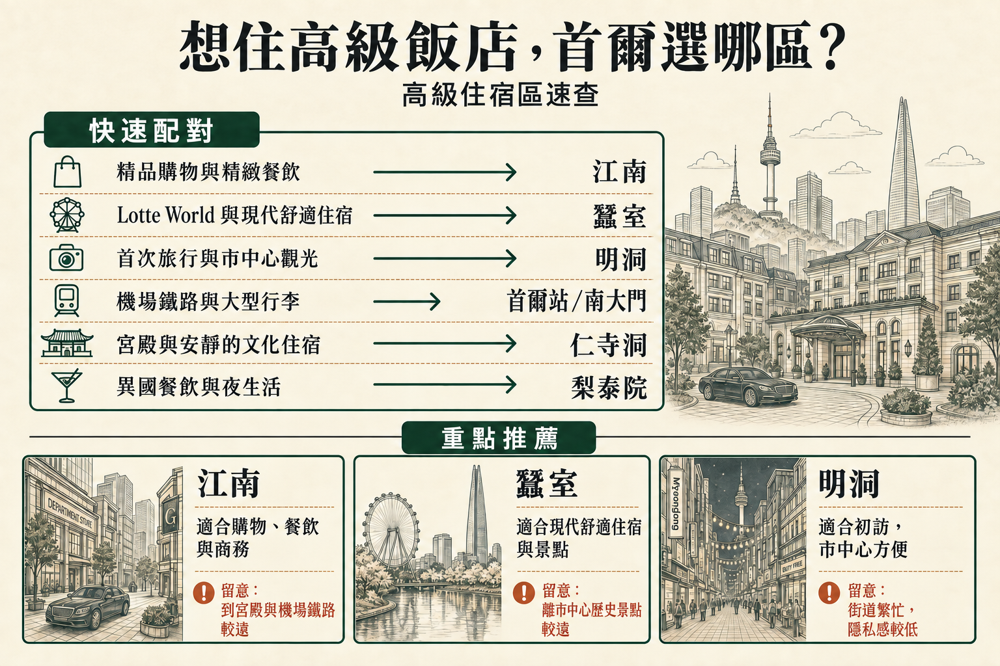

高級住宿住在哪裡最值得？
如果精緻餐飲、購物與商務本來就是行程主軸，江南最合適。蠶室適合圍繞現代化飯店、購物中心與Lotte景點安排集中行程；若是第一次來首爾，仍以市中心觀光為重，明洞會更省事。
重視機場鐵路與行李搬運時，首爾站／南大門更有吸引力。仁寺洞與鄰近光化門提供偏重文化的高級住宿體驗；以餐飲與夜間氣氛為主的旅程，則更適合考慮梨泰院及南山／漢南一帶。
當高端購物、精緻餐飲、商務或預約行程本來就讓旅程大多圍繞漢江以南時，江南最合適。蠶室以現代化飯店、大型室內複合設施及首爾東南部活動，提供另一種高級住宿體驗；明洞則讓第一次來的旅程更靠近市中心，也保有彈性。
在首爾享受高級住宿，不只是挑最貴的地段。重視機場鐵路與大型行李搬運時，首爾站／南大門可能更讓人覺得舒適從容；想把時間留給宮殿、藝廊與安靜街道的旅客，則適合仁寺洞與鄰近的光化門。
值得思考的是，飯店、房型與地點是否確實讓旅程更輕鬆，足以支持較高的房價，而不只是看它有沒有五星級的名號。
如果精緻餐飲、購物與商務本來就是行程主軸，江南最合適。蠶室適合圍繞現代化飯店、購物中心與Lotte景點安排集中行程；若是第一次來首爾，仍以市中心觀光為重，明洞會更省事。
重視機場鐵路與行李搬運時，首爾站／南大門更有吸引力。仁寺洞與鄰近光化門提供偏重文化的高級住宿體驗；以餐飲與夜間氣氛為主的旅程，則更適合考慮梨泰院及南山／漢南一帶。
同一間高級飯店的兩種房型，可能帶來很不同的住宿體驗。面積、床型、景觀、早餐、貴賓廳使用權與取消條件，都取決於實際房型及房價方案，而不只是品牌。
若抵達時得辛苦轉乘、從車站走很遠，或拖著重行李通過不好走的路口，高級住宿的吸引力就會打折。體力最低的抵離日，機場鐵路、計程車上下車動線與最後一段飯店入口尤其重要。
住在高級地段不代表晚上一定安靜。即使飯店評價很高，臨路房、夜生活、送貨區域及房間朝向，仍可能影響住宿感受。
精緻餐飲、飯店酒吧、安靜散步與深夜娛樂，會把旅客帶往首爾很不同的地方。如果晚間活動就在附近，不必再橫跨城市搭很久的車，較高的房價才更有價值。
在首爾，地圖上的短距離不一定代表路程簡單。大型車站、寬闊道路、車流與建築入口，都可能讓實際前往會議或預約地點的時間比預期長很多。
購物、用餐與飯店都在首爾同一帶，百貨公司與高端精品店的便利才用得上。若只是為了回一間知名飯店而橫跨城市，這份便利可能就抵消了大半。

透過下表比較各區適合的行程方式，以及訂房前值得確認的實際細節。
| 區域 | 適合的行程 | 機場交通與行李 | 日常移動 | 夜間氣氛 | 主要取捨 |
|---|---|---|---|---|---|
| 江南 | 購物、餐飲、商務與首爾南部行程集中 | 需要規劃 | 很適合南部行程 | 精緻且熱鬧 | 前往首爾歷史市中心的路程較長 |
| 蠶室 | 重視現代化舒適設施、購物中心與Lotte景點 | 機場車程較長 | 適合首爾東南部行程 | 現代且較平靜 | 離市中心許多歷史景點較遠 |
| 明洞 | 重視初訪觀光與市中心便利 | 通常不難安排 | 方便安排首爾市中心行程 | 熱鬧、商業氣息濃 | 比其他高級住宿區少了些隱私與安靜 |
| 首爾站／南大門 | 機場鐵路、KTX 與行李搬運是主要考量 | 非常方便 | 適合轉乘較多的旅程 | 偏重實用，度假感較少 | 出口複雜，街區生活感較弱 |
| 仁寺洞 | 重視宮殿、藝廊與較安靜的文化行程 | 普通 | 方便安排鐘路與宮殿路線 | 安靜，有文化氣息 | 街道較小，附近高端購物選擇較少 |
| 梨泰院 | 以國際餐飲與夜生活為行程主軸 | 需要規劃 | 適合以餐飲為主的住宿 | 熱鬧，活動延續至深夜 | 坡道、噪音與不平順的行李搬運路線 |
先比較各區對購物、餐飲、商務、觀光、機場交通與安靜程度的配合，再看個別飯店。

旅程本來就以漢江以南為主時，江南高級住宿最容易物有所值。高端購物、餐廳、會議、診所與預約行程都能留在首爾同一大片區域，飯店地點因此整天都派得上用場，而不只在晚上。
當行程轉向宮殿、仁寺洞或歷史市中心其他地方，取捨就會浮現。反覆橫跨城市，可能讓有名的地段變得不方便，交通繁忙時尤其如此。
因此，江南最適合行程本身能合理支持較高地段房價的旅客。
閱讀江南指南 →
蠶室的高級住宿體驗更能集中在同一區。大型室內複合設施、Lotte World、Seoul Sky、購物與石村湖，讓旅客一天有更多時間待在附近，不必一直換街區。
如果飯店本身也是旅程的一部分，而不只是睡覺的地方，這樣的安排尤其合適。代價是離許多宮殿與歷史市中心路線較遠，第一次來又停留短暫時會更有感。
首爾東南部與Lotte園區本來就是行程重點時，蠶室較高的房價才更值得。
閱讀蠶室指南 →
明洞的高級住宿較不像隱世休憩，而是把高檔飯店與輕鬆的首爾初訪結合。市中心觀光、購物與用餐都好安排；若行程仍分散在全城，這可能比住在更具私密感的區域更有價值。
街區熱鬧且商業氣息濃，重視隱私或安靜時，要留意房間朝向及飯店所在街廓。它的優點是彈性：就算改變計畫，也不至於每天都得搭很久的車。
對短暫的初訪而言，這份便利本身就是一種享受。
閱讀明洞指南 →
首爾市中心的這一帶說明，高級住宿不一定要在最時髦的街區。拖著大型行李抵達、搭乘 AREX 或 KTX，或往返首爾與其他城市的旅客，減少轉乘麻煩可能比住在高端購物街旁更有價值。
車站區域本身很複雜，有多個出口、路口與樓層。因此，即使地圖上距離很近，南大門與會賢的感受也可能和車站大廳很不一樣。
如果多花住宿費的主要目的之一，就是讓移動更輕鬆，這個區域最合適。
閱讀首爾站指南 →
如果期待的高級住宿是靠近宮殿、藝廊、傳統街道與悠閒的夜間散步，而不是百貨公司或商辦大樓，仁寺洞很適合。它讓旅客能以較安靜的方式住在首爾市中心，同時保有前往許多歷史景點的便利。
各住宿的特色差異，比區域名稱看起來更大。重視行李、計程車或電梯時，小街道、較舊的建築及車輛進出動線都可能影響體驗。
文化與街區氣氛本來就是高級住宿期待的一部分時，這一帶最有意義。
閱讀仁寺洞指南 →
比起典型的初訪觀光行程，梨泰院更適合以國際餐飲、酒吧與夜間氣氛為主的高級住宿旅程。對已熟悉首爾交通、希望在街區裡度過晚上的重遊旅客而言，尤其自然。
取捨在於實際移動。坡道、小街與深夜活動，讓飯店的確切位置比梨泰院這個名稱更重要，攜帶大型行李或重視安靜時尤其如此。
這是以生活風格為主的高級住宿區，而不是最省事的全方位選擇。
閱讀梨泰院指南 →訂房確認上的房型名稱，比飯店一般相簿中的照片更重要。即使網路上的房間看起來相似，樓層、格局與包含的服務也可能不同。
高級客房仍要符合實際入住人數。床型、人數上限，以及兒童或加人條件，都可能影響哪一種房型才真正合適。
旅途中若需要同時攤開幾個大行李箱，標示的房間面積就更有實際意義。即使設計漂亮，可用空間有限時仍可能顯得擁擠。
城市、河景與地標景觀通常對應特定房型，而不是飯店名稱本身。真正重要的是實際預訂的房價方案如何標示。
有些房價含早餐，有些不含，涵蓋的入住人數也可能不同。只有訂房確實包含早餐時，才算在客房價值之內。
貴賓廳使用權可能取決於房型、開放時間及入住條件。應把它視為訂房方案的一項內容，而不是高級飯店必定附送的設施。
高級設施可能需要預約，或有年齡限制、維護時段及個別使用條件。住宿期間能否實際使用，才決定它的價值。
道路、夜生活與服務區域，對同一間飯店不同朝向的房間影響可能不同。近期針對房間的評論，往往比只憑地段推測更有幫助。
抵達路線要從機場或車站一路想到大廳。拖重行李時，轉乘、計程車上下車、路口與飯店入口，可能比直線距離更重要。
訂高級飯店不代表入住時間一定有彈性。能否提早進房、深夜抵達的程序及額外費用，都取決於住宿實際政策與空房情況。
航班或鐵路時間不太好安排時，入住前或退房後能寄放行李，對高級住宿旅程尤其實用。
知名飯店餐廳仍可能需要另外訂位。住在同一棟建築裡，不代表想用餐的時間一定有位子。
稅金、服務費、押金、付款時間與取消條件，才決定實際訂房成本。標示的每晚房價只是比較的一部分。
即使飯店有名，地點不符合實際行程時，仍可能帶來不必要的跨城移動。
即使是同一間飯店，早餐、貴賓廳、水療與其他服務也可能依房型及房價方案而不同。
飯店照片往往涵蓋多種房型。訂房確認上的面積、床型與景觀，應符合這次住宿真正在意的條件。
若從機場或車站過來，最後得走難搬行李的樓梯、穿越路口或在不好下車的位置搭計程車，高級地段也會變得不方便。
即使是很好的飯店，房間朝向與窗外街道不同，感受也可能不同。住高級飯店仍需要考量噪音。
首爾南部本來就在行程裡，江南才有價值。如果每天多半從宮殿與鐘路一帶開始，住這裡就會不方便許多。
設施使用可能取決於預約、年齡、維護時程，或所訂的房型套裝。
押金、稅金、取消規則與所含服務，可能讓看似相近的兩個房價，實際買到的內容很不同。
大型建築、寬闊道路與地下通道，可能讓地圖上很短的距離，實際走起來出乎意料地麻煩。
最合適的高級住宿區，是能讓實際旅程更順的地方，而不只是街區或飯店名字最響亮的地方。
確定街區符合行程後，值得比較的飯店範圍就會縮小很多。比起只看標示房價，房型、所含服務、取消條件與實際抵達路線通常更重要。
如果行程以高端購物、餐飲、商務及漢江以南的活動為主，江南最合適。蠶室的現代化設施較集中，方便就近安排住宿與活動；第一次來、以首爾市中心為重點的旅客，通常住明洞較省事。
有可能，但前提是行程本身適合住這裡。江南特別方便安排首爾南部、高端購物與餐飲行程；如果主要逛宮殿，住市中心一帶通常更方便。
適合。想住現代化飯店，並就近逛購物中心、Lotte景點，在首爾東南部安排較集中的行程，蠶室很合適。主要取捨是前往市中心許多歷史景點的車程較長。
適合，尤其是第一次來或停留時間較短的旅客。明洞兼具高級飯店、市中心觀光、購物與餐飲便利，不過街區較熱鬧、商業氣息較重，沒有其他高級住宿區那麼安靜。
如果重視 AREX、KTX 與大型行李搬運，首爾站／南大門是最著重交通便利的選擇。不過這一帶出口與樓層多，仍要留意飯店實際入口及往返車站的路線。
如果室內景點、購物中心及Lotte園區本來就是家庭行程的重點，蠶室尤其方便。若更重視宮殿觀光或機場交通，其他區域可能更合適。
整體而言，江南是高端購物最有優勢的選擇，尤其當餐飲與其他首爾南部行程也集中在附近時。蠶室適合逛大型現代化複合設施，第一次來、想在市中心購物則是明洞較方便。
如果國際餐飲、酒吧與夜間氣氛是住宿體驗的重點，梨泰院可以很合適。不過重視安靜、大型行李搬運方便，或第一次來且行程緊湊的旅客，住這裡會比較費心。
購物、餐飲與商務本來就讓行程留在漢江以南時，江南最容易物有所值。蠶室提供較集中的現代化住宿體驗，明洞則讓初訪更靠近市中心且保有彈性。如果交通與行李最重要，首爾站／南大門可能是更明智的高級住宿選擇。
最好的高級飯店，不一定是地段最有名或房價最高的那間，而是地點、房型與服務能確實減少旅程麻煩，讓額外花費值得的那間。